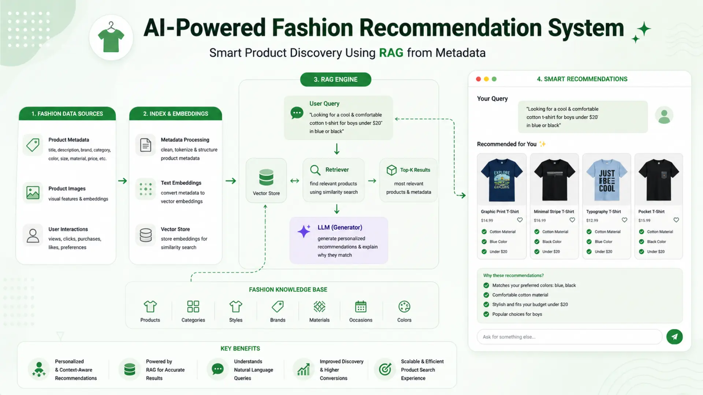
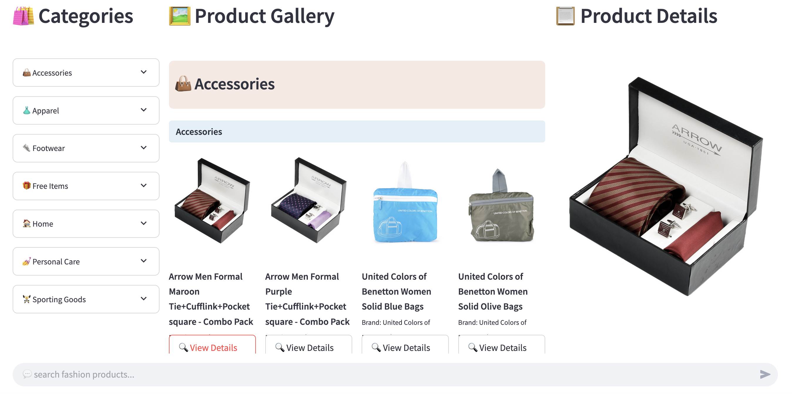

AI-Powered Fashion Recommendation System: Smart Product Discovery Using RAG from Metadata

🧭 Finding the right fashion product through traditional search interfaces often feels limiting — especially when users want to describe their needs in natural language. Filters and checkboxes can only go so far when what you really want is to say, "Show me a warm, lightweight jacket under ¥5000 for early spring."
🎯 To address this challenge, we developed RAG Fashion Recommender, an AI-powered system that allows users to search for fashion items just by typing what they're looking for — no need to scroll endlessly or guess the right keywords.
💡 In this blog, we'll walk through how we built the RAG Fashion Recommender — a smart recommendation system based on Retrieval-Augmented Generation (RAG), semantic embeddings, and large language models, all wrapped in a simple Streamlit interface.
🔍 Whether you're interested in AI applications, smart search systems, or building real-world projects using open datasets — this guide will walk you through every step.
📚 Table of Contents
- 📘 Introduction
- 📌 Project Overview
- 🗂️ Project Structure
- 🧾 Dataset Summary
- ⚙️ Setting Up the Environment
- 🧠 Metadata Extraction & Embedding
- Cleaning Product Descriptions with LLM
- Generating Paragraphs from Metadata
- Embedding Metadata into Vectors
- 🗃️ Vector Database with ChromaDB
- 🔍 Semantic Search & Re-Ranking
- 📜 Prompt Engineering
- 💻 Streamlit Web UI
- Left Panel — Category Navigation
- Middle Panel — Product Grid View
- Right Panel — Product Details
- Bottom — Natural Language Search Input
- 🧪 Example Queries & Output
- 🎯 Conclusion
📘 1. Introduction
🧥 In the world of online fashion, product discovery often feels clunky and outdated. Most platforms still rely on keyword-based search or fixed filters that don't align with how people actually describe what they want.
🧍♂️ For example, a user might search:
"Looking for comfortable summer t-shirts under ¥1000 in white or navy, suitable for everyday wear."
But traditional search systems struggle to interpret and return relevant results for such expressive, natural-language queries.
This project introduces a modern solution — the 🧠 RAG Fashion Recommender — an AI-powered product discovery tool that allows users to search for fashion items using plain English. Rather than relying on fixed keywords or rigid tags, the system understands the intent behind a query and links it to relevant product metadata.
🔧 Key Technologies Used:
- ✨ Semantic embeddings — to represent both metadata and user queries in a shared vector space
- 📦 ChromaDB — to store and search these embeddings efficiently
- 🤖 LLMs via LangChain-Groq — to re-rank and refine the most relevant search results
- 💻 Streamlit — for building an interactive, user-friendly web UI
📊 The recommendation engine uses a publicly available fashion dataset from Kaggle containing over 40,000 products. Each item includes metadata such as category, brand, gender, season, and price — all of which are processed, embedded, and indexed for semantic search.
By the end of this blog, you'll see how raw fashion metadata can be transformed into an intelligent recommendation system that understands natural language and delivers relevant product suggestions — fast and intuitively.
📌 2. Project Overview
The RAG Fashion Recommender is designed to make product discovery easier and more intuitive by allowing users to express their needs in natural language. Rather than relying on dropdown filters or exact keyword matches, this system uses semantic understanding and LLM-powered re-ranking to deliver results that feel more relevant, contextual, and human-aware.
🧩 Key Features
Natural Language Search
Users can type full-sentence queries like "show me casual shoes for men under ¥2000", and the system understands the intent.
LLM-Based Re-Ranking
Initial search results are refined using a large language model to better match the user's true needs.
Real-World Fashion Metadata
Powered by a Kaggle dataset with detailed product attributes — category, gender, color, brand, season, and price.
Interactive Web App
Built with Streamlit, the UI is clean, responsive, and easy to use for searching and browsing.
Modular Architecture
Each component — from embedding and storage to retrieval and display — is independently structured and easily reusable.
📁 How It Works at a Glance
🗂️ 3. Project Structure
To keep the system modular and maintainable, the RAG Fashion Recommender is organized into clearly separated folders and files — each one focused on a specific responsibility, from data processing and embedding to semantic search and UI rendering.
📁 Directory Layout
Below is the high-level folder and file structure of the project:
📦 Purpose of Key Files and Modules
Here's a brief description of what each major file and module is responsible for:
- config.py — Central configuration for paths, constants, models, and prompt locations.
- data_embedder.py — Loads metadata, generates paragraphs using LLM, encodes them into vectors, and stores them in ChromaDB.
- metadata_extractor.py — Cleans raw product data from JSON and CSV using prompts, including HTML stripping and LLM formatting.
- vector_db.py — Wrapper around ChromaDB with methods to insert, query, and export data.
- data_retriever.py — Handles user query embedding and initial semantic retrieval from the vector store.
- re_ranker.py — Re-ranks top-k search results using a dedicated LLM prompt.
- web_app.py — Streamlit UI with left-side category navigation, middle product gallery, right-side detail view, and bottom chat input.
- utils/category.py — Defines a custom category and sub-category tree for the UI, along with emoji icons.
- utils/metadata_fields.py — Defines which metadata fields to display and their display names.
- prompt/html_prompt.txt — Cleans raw HTML descriptions using LLM instruction.
- prompt/paragraph_prompt.txt — Generates descriptive paragraphs from key-value metadata.
- prompt/rerank_prompt.txt — Refines and ranks search results using LLM-based semantic alignment.
Keeping this modular file organization helps ensure the system remains extensible and easy to maintain as it scales.
🧾 4. Dataset Summary
The performance and flexibility of this recommendation system heavily depend on the quality and richness of the dataset. For this project, we use the open-source Fashion Product Images (Small) dataset from Kaggle — a clean, well-labeled dataset that's widely used in both academic research and real-world fashion tech applications.
📦 Source and Scale of the Data
- Dataset Name: Fashion Product Images (Small)
- Source: Kaggle — paramaggarwal/fashion-product-images-small
- Total Products: ~44,000 fashion items
- Images: One high-resolution image per product (images/xxxx.jpg)
-
Metadata Files:
- styles.csv — Primary file containing structured product information
- images.csv — Maps product IDs to image filenames and hosted URLs
This dataset closely mirrors a real-world e-commerce catalog and provides enough variety and structure to power intelligent recommendation systems.
🧾 Metadata Attributes Provided
The styles.csv file includes several structured fields:
- 🏷️ product_name — Name or title of the product
- 👗 master_category, sub_category, product_type — Hierarchical category structure
- 🎨 base_colour — Main color of the item
- 🏷️ brand — Brand or manufacturer
- 💸 price — Price of the product
- 🧥 season, year — Temporal context
- 🚻 gender — Intended audience (Men, Women, Unisex)
- 🧰 usage — Context or activity where the item is commonly used
These fields are used to generate descriptive paragraph embeddings and enable intelligent filtering and matching through the vector search system.
🧰 How We Use the Data
In our system:
- styles.csv — Loads core metadata fields such as brand, gender, product type, color, season, and price.
- images.csv — Associates each product ID with its corresponding image file or hosted image URL.
-
data/metadata/*.json — Contains detailed descriptors like:
- 📝 description — Often in HTML format
- 💡 style_note — Style or design suggestions
- 🧼 materials_care_desc — Care instructions and materials info
📌 All this data is preprocessed, cleaned using LLM prompts, and transformed into unified product descriptions before being embedded and indexed for fast, intelligent search.
⚙️ 5. Setting Up the Environment
Before running the system, you need to set up the environment with the correct Python version, install the necessary dependencies, and configure your API key. The project is lightweight and runs smoothly on most modern machines.
🐍 Installing Dependencies
We recommend using Python 3.12, which was used during development. To get started, create and activate a virtual environment:
Then install all required libraries using:
Key Python packages:
- streamlit
- torch
- sentence-transformers
- python-dotenv
- langchain-groq
- chromadb
- watchdog
💡 If you're deploying to Hugging Face Spaces, requirements.txt will be automatically detected and used during the build.
🔐 Preparing the .env File
To use the Groq LLM for HTML cleaning and re-ranking, you'll need to set your GROQ API key. Create a file named .env in the root directory and add the following line:
This file is automatically loaded at runtime using the python-dotenv package.
▶️ Running the App Locally
Once setup is complete, launch the app using Streamlit:
This will open your browser at http://localhost:8501 and load the app interface.
The interface is divided into four main parts:
- 🛍️ Left: Category browser
- 🖼️ Center: Product gallery
- 📋 Right: Product detail viewer
- 💬 Bottom: Natural language search bar
With this setup, you're ready to explore and interact with your RAG-based fashion recommendation system in real time.
🧠 6. Metadata Extraction & Embedding
To enable meaningful semantic search, raw product metadata must first be transformed into clear, natural language descriptions. These are then embedded into vector form so they can live in a searchable space. This transformation pipeline happens in three key steps:
🧽 Cleaning Product Descriptions with LLM
Many product descriptions are in HTML or split across multiple fields such as description, style_note, and materials_care_desc. Instead of relying on manual cleanup or brittle parsing rules, we use an LLM to clean and merge them.
The prompt in prompt/html_prompt.txt guides the LLM to:
- 🧹 Remove all HTML tags
- 🧾 Extract meaningful, clean text
- 🪄 Combine all fields into a natural-sounding paragraph
✅ Example (from metadata_extractor.py):
This ensures consistency and clarity — crucial for generating high-quality embeddings later on.
📝 Generating Paragraphs from Metadata
Once the raw metadata fields are cleaned, we generate a search-optimized paragraph that captures the essence of each product. This is done using the prompt from prompt/paragraph_prompt.txt.
Goals of this step:
- 🧠 Create a cohesive description using available metadata
- 🔎 Ensure all relevant fields (brand, color, season, gender, etc.) are naturally represented
✅ Example (from convert_to_paragraph()):
Sample Output:
"This men's cotton t-shirt from Adidas is perfect for casual summer wear. Available in navy blue with short sleeves and lightweight fabric."
This paragraph becomes the product's semantic fingerprint.
🔢 Embedding Metadata into Vectors
The final step is embedding. We use BAAI/bge-base-en-v1.5 — a SentenceTransformer model — to convert the paragraph into a dense vector.
✅ Example (from data_embedder.py → process_and_store()):
The entire process is batch-optimized for speed. Duplicate entries are automatically skipped using get_by_id().
💾 Once embedded, each product exists in three forms:
- A descriptive paragraph — document
- A numerical vector — embedding
- Structured metadata — metadatas
All are stored in ChromaDB and made searchable through semantic similarity.
🗃️ 7. Vector Database with ChromaDB
Once each product is converted into a semantic vector, it must be stored in a database optimized for similarity search. For this project, we use ChromaDB — a lightweight, high-performance vector database tailored for AI workflows.
💾 Storing Product Embeddings
Each product is stored in ChromaDB with the following components:
- 🔢 ID: Unique product identifier
- 📝 Document: Natural language paragraph of the product
- 🧠 Embedding: 512-dimensional vector representing semantic meaning
- 🏷️ Metadata: Original structured fields such as brand, price, category, etc.
Insertion is handled by the ChromaDBClient class in vector_db.py using the add_to_vector_db() method.
✅ Code Example:
This method is called in batches during the embedding process. Duplicate entries are automatically skipped using get_by_id().
✅ Batch insertion logic:
🔍 Querying Products by Vector Similarity
When a user enters a query, it's embedded into a vector and compared against the stored vectors in ChromaDB. Retrieval is based on cosine similarity, with optional support for structured filters.
✅ Query Example (from vector_db.py):
To filter results by fields such as sub-category or season, use the where clause:
🧠 This hybrid of semantic similarity and structured filtering makes the system both flexible and precise — ideal for large fashion catalogs with varied search criteria.
🔍 8. Semantic Search & Re-Ranking
Once all product metadata is embedded and stored in ChromaDB, the next phase is interpreting the user's query. Our goal is to return the most relevant fashion items based on free-text input like:
"Show me some casual white t-shirts for summer under ¥1000."
This search process is broken down into two stages: initial retrieval using vector similarity, and re-ranking using an LLM for deeper understanding and alignment.
🧭 User Query Embedding and Initial Retrieval
When a query is submitted, we embed it using the same SentenceTransformer model — BAAI/bge-base-en-v1.5 — that was used to embed product metadata. The resulting query vector is passed to ChromaDB to find the top-k most similar product vectors.
✅ Code from data_retriever.py:
At this stage, results are returned based solely on vector similarity. It's fast and often accurate — but it doesn't yet capture subtle preferences like tone, context, or occasion.
🧠 Re‑Ranking Results with LLM
To improve contextual understanding, we use a large language model (Groq + LLaMA 3 via LangChain) to re-rank the top-k retrieved items. This helps surface results that better align with user intent — even if they're not the closest match in vector space.
The ReRanker class prepares a prompt using the retrieved product list and the original user query. The LLM then filters and reorders them intelligently.
✅ Prompt pattern from rerank_prompt.txt:
✅ Code from re_ranker.py:
This results in much higher-quality output that captures deeper relevance factors not captured by vector similarity alone.
🧾 Final Output Returned to UI
The final re-ranked list is passed back to the Streamlit UI and rendered as interactive product cards. Each product card displays:
- 🖼️ Product image
- 🏷️ Name and brand
- 💰 Price and category
- 🔍 "View Details" button to explore more information
✅ Code from data_retriever.py:
🎯 At this stage, a plain-text search query is transformed into a curated list of semantically matched and contextually relevant product suggestions — no filters or advanced search required.
📜 9. Prompt Engineering
A key part of this system's intelligence comes from how we guide the large language model (LLM) using carefully crafted prompts. Prompts are responsible for transforming messy inputs into clean, structured outputs — and ensuring consistent formatting, rephrasing, or filtering of data.
Our project uses three dedicated prompt templates, each stored as a .txt file inside the prompt/ directory.
🧽 HTML Cleaning Prompt
The raw product metadata often contains embedded HTML and formatting inconsistencies. To clean this data, we use html_prompt.txt to instruct the LLM to:
- 🧹 Remove HTML tags
- 🔍 Extract only the key content (e.g., name, brand, description, style note)
- 🪄 Output a single, readable paragraph
📝 Prompt Behavior:
- ❌ Never show field names like brand: or style_note:
- ✔️ Only include fields that exist — skip empty ones
- 🚫 Do not invent or alter details
- 🧾 Output just one paragraph — no lists or bullet points
✅ Prompt snippet:
This ensures all product descriptions are clean, consistent, and ready for embedding.
🧾 Paragraph Generation Prompt
After cleaning, we convert the metadata into a human-readable paragraph using paragraph_prompt.txt. This paragraph is then embedded for semantic search.
This step helps to:
- 🧠 Encode relevant fields naturally in one paragraph
- 🎯 Serve as high-quality input to the embedding model
- 🔍 Enable search by converting structure into searchable context
📝 Prompt Goals:
- 🚫 Avoid listing keys and values
- ✅ Ensure grammar and readability
- 📦 Include all available metadata fluidly
✅ Prompt snippet:
This transforms structured fields into a format that's easy for both users and the model to understand.
🎯 Re‑Ranking Prompt for Matching
While vector similarity provides a strong baseline for relevance, LLM-based re-ranking further enhances quality. We use rerank_prompt.txt to identify and sort the best matches for a user query.
🧠 This prompt enables the LLM to:
- 🔎 Understand the search intent
- 📋 Review the top-k product entries
- ✅ Return only the items that match best, re-ordered by relevance
✅ Prompt snippet:
Together, these three prompts form the backbone of our language pipeline — enabling clean preprocessing, meaningful embeddings, and intelligent result re-ranking.
💻 10. Streamlit Web UI
The front end of the RAG Fashion Recommendation System is built entirely with Streamlit. It provides a clean, single-page interface where users can browse by category, view detailed product info, and search using full natural language queries — all with real-time updates.
🖼️ Web Interface Preview

Figure 1: Fashion Recommendation Web UI
🧭 Left Panel — Category Navigation
- 📂 Displays a collapsible list of fashion categories and sub-categories
- 👗 Users can expand master categories (e.g., Apparel) and select any sub-category (e.g., Topwear)
- 🎨 Emojis are used to improve visual clarity and UX friendliness
🛍️ Middle Panel — Product Grid View
- 🖼️ Displays a paginated gallery of fashion products
- 🧾 Each card shows the image, name, brand, and price
- 🔍 A "View Details" button allows users to open more information in the right panel
🧾 Right Panel — Product Details
- 🖼️ Shows a larger image and detailed metadata of the selected item
- 🏷️ Displays attributes like name, brand, price, color, category, season, etc.
- ♻️ Users can clear the selection to return to the grid view
💬 Bottom — Natural Language Search Input
- 📥 Located at the bottom of the UI for direct access
- ✍️ Users can input descriptive queries like: "Show me winter jackets for women under ¥5000."
- ⚡ The query is embedded, matched via vector similarity, re-ranked by LLM, and displayed instantly
🚀 Try It Yourself
- 🤗 Hugging Face Space: https://huggingface.co/spaces/shafiqul1357/rag-fashion-recommendation
- 📦 GitHub Repository: https://github.com/shafiqul-islam-sumon/rag-fashion-recommendation
📘 Want to Deploy It Yourself?
If you'd like to deploy your own Streamlit app to Hugging Face Spaces, follow this step-by-step guide:
🔗 How to Deploy a Streamlit App to Hugging Face
🧪 11. Example Queries & Output
To evaluate how well the system understands user intent, we tested it with a variety of natural language queries — from simple one-liners to more complex, multi-intent requests. The results are pulled from ChromaDB, re-ranked by the LLM, and displayed as interactive product cards in the Streamlit interface.
🧾 Simple Queries
These examples represent direct, single-intent queries. They typically focus on a single category, color, or usage context — and the system handles them accurately with minimal ambiguity.
These results confirm the system's ability to match descriptive search phrases to relevant items — even without explicit filters.
🧠 Complex Multi-Category Queries
We also tested more layered queries involving combinations of categories, budget constraints, seasons, and usage conditions. This is where LLM-powered re-ranking adds significant value.
These results highlight the strength of combining vector similarity with LLM reasoning — producing recommendations that go beyond keywords and actually understand user intent.
🎯 12. Conclusion
In this project, we built a complete RAG-powered Fashion Recommendation System that brings natural language understanding into product discovery. By blending semantic embeddings, vector search, and large language models, we created an experience where users can simply describe what they need — without relying on traditional filters or complex UIs.
From cleaning raw metadata and generating descriptive paragraphs, to embedding them into a vector space and re-ranking results with an LLM, each step in the pipeline reflects how real users naturally search and think. The clean, intuitive interface built with Streamlit ensures that the power of the system remains accessible to everyone.
💡 Whether you're building a fashion tech product, exploring LLM-powered recommendation systems, or looking for a real-world use case for RAG — this project offers a practical and extensible blueprint for modern AI-driven discovery.

Technical Stacks
 Python
Python Streamlit
Streamlit Hugging Face
Hugging Face RAG
RAG Llama
Llama ChromaDB
ChromaDB LangChain
LangChain Prompt Engineering
Prompt Engineering
References
-
 GitHub Repository:
RAG Fashion Recommendation System
GitHub Repository:
RAG Fashion Recommendation System
-
Live App:
Fashion Recommendation on Hugging Face
-
Python:
python.org
-
Streamlit:
streamlit.io
-
 Medium Article:
Read on Medium
Medium Article:
Read on Medium
-
Llama:
llama.com
-
LangChain:
langchain.com
-
ChromaDB:
trychroma.com